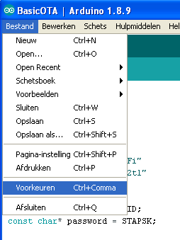
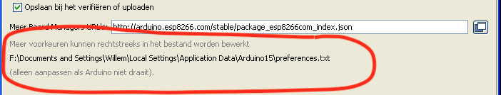

Upload Over The Air (bug?)
Het lijkt erop dat er een bug zit in de toolchain van de ArduinoIDE
voor wat betreft het Over The Air uploaden van omvangrijke Firmware.
Als je probeert om de DSMRloggerWS firmware via de ArduinoIDE te uploaden krijg je consequent een popUp window te zien waarin gevraagd wordt een password in te voeren:

Waarna, wat je ook klikt of invult je de volgende foutmelding in de ArduinoIDE te zien krijgt:

.. en het verhaal stopt.
Het popUp window is een bekend fenomeen in de Arduino wereld omdat het in verschillende situaties voor kan komen. Helaas wordt er nergens een échte oplossing gegeven.
Maar gelukkig is er voor dít probleem een Work Around!
Het blijkt, dat als je de instructie om de firmware te uploaden naar de ESP8266 op de command line handmatig invoert de OTA upload wél goed gaat!
Inplaats van op het Compile & Upload icon  te klikken
te klikken
moet je in de IDE op het Verify icon  klikken.
klikken.
Daarná kun je in een terminal of command window het script espota.py gebruiken
om de gecompileerde binary naar de ESP8266 over te zetten.
In de utils directory van de repository heb ik twee Python programma's
(één voor Windows en één voor unix-achtige OS'n) gezet die dit iets
eenvoudiger maakt.
Om, voor de vervolg stappen, de goede informatie in het log-venster van de ArduinIDE tezien te krijgen moet in de
Preferences de
Show Verbose Output During: upload
zijn aangevinkt:

otaUpload programma (Windows)
Je roept het programma als volgt aan:
otaUpload.py <IP adres van de ESP8266>
> otaUpload.py 192.168.12.161
otaUpload : [ 1 ] [ DSMRloggerWS_v42.ino.bin ]
otaUpload : bin File Found DSMRloggerWS_v42.ino.bin
otaUpload : Last Modified Tue Apr 23 14:37:13 2019
----------------------------------------------------------------------------
otaUpload : espota -i 192.168.12.161 -f DSMRloggerWS_v42.ino.bin
Uploading................................................................
.........................................................................
.........................................................................
Done ..
>
Om het programma in jouw omgeving te laten werken moet je een aantal regels aanpassen.
1 #!/usr/bin/env python
2 #
3 # This program is tailered to the Windows envirionment
4 # It will upload an arduino compiled sketch
5 # to a WiFi connected device
6 #
7 #------ where pyton is located -----------------------------
8 PYTHON='C:\python27\python.exe'
9 #
10 #------ this is the Sketch Location (see preferences.txt) --
11 BUILDPATH = "C:\Documents and Settings\(YourLoginName)\Local Settings\Temp\Build"
12 #
13 #------ Edit this ESPOTAPY to point to the location --------
14 #------ where your espota.py file is located --------
15 ESPOTAPY = "\"C:/Documents and Settings/(YourLoginName)\Local Settings/Application Data/Arduino15/packages/esp8266/hardware/esp8266/2.5.0/tools/espota.py\""
16 #
17 #------ do not change anything below this line! ------------
18 #
De meeste regels zijn commentaar ("#"). Het gaat dan ook alleen om de variabelen die in de regels 8, 11 en 15 een waarde krijgen.
PYTHON (Windows)
Om erachter te komen waar python op jouw systeem is geïnstalleerd kun je de volgende instructies in een command window intoetsen:
C:>
C:> python
Python 2.7.16 (v2.7.16:413a49145e, Mar 4 2019, 01:30:55)
Type "help", "copyright", "credits" or "license" for more i
>>> import sys
>>> sys.executable
'C:\\python27\\python.exe'
>>> quit()
De uitvoer achter de regel sys.executable neem je over.
PYTHON='C:\\python27\\python.exe'
BUILDPATH (Windows)
BUILDPATH is de variabele die aangeeft waar in jouw setup van de ArduinoIDE
de gecompileerde firmware wordt neergezet.
Onder Windows maakt de ArduinoIDE na iedere start een nieuwe map aan onder
C:\Documents and Settings\(YourLoginName)\Local Settings\Temp\arduino_build_<nummer>
Om het otaUpload.py programma goed te laten lopen is het noodzakelijk om
in de ArduinoIDE preferences.txt het build.path op een vaste lokatie
te zetten.
Je moet daartoe in de Preferences van de ArduinoIDE kijken waar dit bestand
op jouw computer te vinden is.


Sluit de ArduinoIDE af (dat is écht noodzakelijk!) ..
.. en voeg deze regel ergens in het begin van het preferences.txt bestand toe:
build.path=C:\Documents and Settings\(YourLoginName)\Local Settings\Temp\Build
Sla het bestand op en start de ArduinoIDE.
Neem het pad dat je in preferences.txt hebt opgegeven over in otaUpload.py.
#------ this is the Sketch Location (see preferences.txt) --
BUILDPATH = "C:\Documents and Settings\(YourLoginName)\Local Settings\Temp\Build
#
Je kunt erachter komen wat het build-pad bij jouw computer is door een simpele
Sketch bedraad te uploaden.
Je ziet dan zoiets als dit onderin het log-venster verschijnen (voor de duidelijkheid
heb ik de regel waar het omgaat in stukjes geknipt):
De schets gebruikt 306788 bytes (29%) programma-opslagruimte. Maximum is 1044464 bytes.
Globale variabelen gebruiken 28384 bytes (34%) van het dynamisch geheugen. Resteren 53536 bytes voor lokale variabelen. Maximum is 81920 bytes.
C:\Documents and Settings\User\Local Settings\Application Data\Arduino15\packages\esp8266\tools\esptool\2.5.0-3-20ed2b9/esptool.exe \
-vv -cd ck -cb 115200 -cp COM3 -ca 0x00000 \
-cf C:\DOCUME~1\(YourLoginName)\LOCALS~1\Temp\Build/BasicOTA.ino.bin
Achter -cf staat het pad waar het om gaat. In dit voorbeeld is dat
dit blijkbaar C:\Documents and Settings\User\Local Settings\Temp\Build/.
ESPOTAPY (Windows)
#------ Edit this ESPOTAPY to point to the location --------
#------ where your espota.py file is located --------
ESPOTAPY = "\"C:/Documents and Settings/(YourLoginName)/Local Settings/Application Data/Arduino15/packages/esp8266/hardware/esp8266/2.5.0/tools/espota.py\""
#
Let op!
De opmaak van de ESPOTAPY regel is een beetje eigenaardig, maar als je hem precies zo in het programma aanpast werkt het. Het begint met "\" (Quote-Backslash-Qoute) en het eindigt met \"" (Backslash-Quote-Quote). Overal waar je gewend bent om in een pad een backslash (\) te gebruiken moet je voor deze variabele een slash (/) gebruiken.Vraag mij niet waarom!
De variabele ESPOTAPY geeft aan waar op jouw systeem het espota.py programma staat.
In een Windows omgeving is dit waarschijnlijk:
C:\Documents and Settings\(YourLoginName)\Local Settings\Application Data\Arduino15\packages\esp8266\hardware\esp8266\2.5.0\tools\espota.py
Als je de Sketch BasicOTA Over The Air upload naar een ESP8266 dan zie je in het
log-venster onderin de ArduinoIDE een regel verschijnen die espota.py aanroept.
De schets gebruikt 306788 bytes (29%) programma-opslagruimte. Maximum is 1044464 bytes.
Globale variabelen gebruiken 28384 bytes (34%) van het dynamisch geheugen.
Resteren 53536 bytes voor lokale variabelen. Maximum is 81920 bytes.
python.exe C:\<stukPath>\Arduino15\packages\esp8266\hardware\esp8266\2.5.0/tools/espota.py \
-i 192.168.12.161 -p 8266 --auth= \
-f C:\Documents and Settings\(YourLoginName)\Local Settings\Temp\Build/BasicOTA.ino.bin
Uploading............................................................................................
.....................................................................................................
.....................
Dit deel van de regel
C:\<stukPath>\Arduino15\packages\esp8266\hardware\esp8266\2.5.0/tools/espota.py
moet je achter ESPOTAPY invullen (maar neem nota van de opmerking hierboven
over de opmaak!).
Tenslotte moet je het otaUpload.py programma in een map/directory zetten die in de PATH variabele
voorkomt of je moet het programma steeds aanroepen met de volledige pad-naam waar het programma
staat (bijvoorbeeld <pad-naar>\otaUpload.py).
otaUpload programma (Unix OS'n)
Je roept het programma als volgt aan:
otaUpload <IP adres van de ESP8266>
$ otaUpload 192.168.12.161
otaUpload : [ 1 ] [ DSMRloggerWS_v42.ino.bin ]
otaUpload : bin File Found DSMRloggerWS_v42.ino.bin
otaUpload : Last Modified Tue Apr 23 14:37:13 2019
----------------------------------------------------------------------------
otaUpload : espota -i 192.168.12.161 -f DSMRloggerWS_v42.ino.bin
Uploading................................................................
.........................................................................
.........................................................................
Done ..
$
Om het programma in jouw omgeving te laten werken moet je een aantal regels aanpassen.
1 #!/usr/bin/env python
2 #
3 # This program is tested with MacOS but should run
4 # on any 'unix'-like OS.
5 # It will upload an arduino compiled sketch
6 # to a WiFi connected device
7 #
8 #------ where pyton is located -----------------------------
9 PYTHON='/usr/local/bin/python'
10 #
11 #------ this is the Sketch Location (see preferences.txt) --
12 BUILDPATH = "/Users/(YourLoginName)/tmp/Arduino/build"
13 #
14 #------ Edit this ESPOTAPY to point to the location --------
15 #------ where your espota.py file is located --------
16 ESPOTAPY = '/Users/(YourLoginName)/Library/Arduino15/packages/esp8266/hardware/esp8266/2.5.0/tools/espota.py'
17 #
18 #------ do not change anything below this line! ------------
19 #
De meeste regels zijn commentaar ("#"). Het gaat dan ook alleen om de variabelen die in de regels 9, 12 en 16 een waarde krijgen.
PYTHON (Unix-Os)
Voor unix achtige OS'n moet hier het volledige pad naar de python binary staan.
Je kunt achterhalen waar op jouw computer python is geïnstalleerd door het
volgende in een terminal window in te toetsen:
$ which python
/usr/local/bin/python
$
De reply van het which commando voer je bij de PYTHON variabele in.
PYTHON='/usr/local/bin/python'
BUILDPATH (Unix-Os)
#------ this is the Sketch Location (see preferences.txt) --
BUILDPATH = "/Users/(YourLoginName)/tmp/Arduino/build"
BUILDPATH is de variabele die aangeeft waar in jouw setup van de ArduinoIDE
de gecompileerde firmware wordt neergezet.
Je kunt erachter komen wat het build-pad bij jouw computer is door een simpele
Sketch bedraad te uploaden.
Je ziet dan zoiets als dit onderin het log-venster verschijnen (voor de duidelijkheid
heb ik de regel waar het omgaat in stukjes geknipt):
Sketch uses 307352 bytes (29%) of program storage space. Maximum is 1044464 bytes.
Global variables use 28424 bytes (34%) of dynamic memory, leaving 53496 bytes for local variables. Maximum is 81920 bytes.
/Users/WillemA/Library/Arduino15/packages/esp8266/tools/esptool/2.5.0-3-20ed2b9/esptool \
-vv \
-cd none -cb 115200 -cp /dev/cu.usbserial-A501B8OQ \
-ca 0x00000 \
-cf /Users/(YourLoginName)/tmp/Arduino/build/BasicOTA.ino.bin
Achter -cf staat het pad waar het om gaat. Op mijn computer is
dit blijkbaar /Users/(YourLoginName)/tmp/Arduino/build/.
ESPOTAPY (Unix-Os)
#------ Edit this ESPOTAPY to point to the location --------
#------ where your espota.py file is located --------
ESPOTAPY = '/Users/User/Library/Arduino15/packages/esp8266/hardware/esp8266/2.5.0/tools/espota.py'
De variabele ESPOTAPY geeft aan waar op jouw systeem het espota.py programma staat.
Als je de Sketch BasicOTA Over The Air upload naar een ESP8266 dan zie je in het
log-venster onderin de ArduinoIDE een regel verschijnen die espota.py aanroept.
Sketch uses 307352 bytes (29%) of program storage space. Maximum is 1044464 bytes.
Global variables use 28424 bytes (34%) of dynamic memory, leaving 53496 bytes for local variables. Maximum is 81920 bytes.
python /<path>/espota.py -i 192.168.12.161 -p 8266 --auth= -f /Users/WillemA/tmp/Arduino/build/BasicOTA.ino.bin
Uploading............................................................................................
.....................................................................................................
.....................
Dit deel van de regel /<path>/espota.py moet je achter ESPOTAPY invullen.
Tenslotte moet je het otaUpload programma in een map/directory zetten die in de PATH variabele
voorkomt of je moet het programma steeds aanroepen met de volledige pad-naam waar het programma
staat (bijvoorbeeld <pad-naar>\otaUpload).
preferences.txt
Ergens in het preference.txt bestand staan deze instellingen die aangeven
hoe je binaries worden ge-build en waar ze worden neergezet.
.
build.path=/Users/User/tmp/Arduino/build
build.verbose=true
build.warn_data_percentage=75
.
.
Het gaat om de vaiabele build.path. Als deze niet in het preferences.txt
bestand staat, raad ik je aan hem toe te voegen met een pad waar je makkelijk
bij kunt komen zodat je Sketches altijd op dezelfde plek gecompileerd worden
-onafhankelijk van de versie van de ArduinoIDE-.
Het maakt het leven een stukje eenvoudiger ;-)
Let op!
Pas het preferences.txt bestand alleen aan als de ArduinoIDE is afgesloten! De ArduinoIDE heeft deze preferences in zijn geheugen staan en overschrijft het preferences.txt bestand bij het afsluiten.Dit commentaar vond ik op github m.b.t. de build.path variabele:
# temporary build path, normally this goes into the default
# "temp" folder for that platform (as defined by java)
# but this can be used to set a specific file in case of problems
#build.path=build
Als de variabel niet ge-set wordt (er staat een # voor of hij ontbreekt
in het preferences.txt bestand) dan wordt de standaard, door java bepaalde,
temp directory gebruikt.
java.io.tmpdir
The default value is typically "/tmp", or "/var/tmp" on Unix-like platforms. On Microsoft Windows systems the java.io.tmpdir property is typically "C:\\WINNT\\TEMP". .. or .. at Windows 10 it seems to be "AppData\Local\Temp\" or "\Users\\(YourLoginName)\AppData\Local\Temp\"